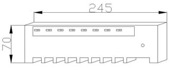
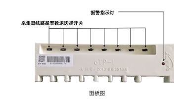

云后台介绍
云后台系统介绍
面向广大工商业企业、公共机构等电力专变客户，通过运行状态监测和异常预警、报警，帮助客户提高变电站运行管理效率，消除人工运维盲区，保障变电站运行安全，降低变电站运行管理成本，实现企业变电站运行管理专业化、智能化、可视化的一项电力服务。
功能介绍
- 监控变电配电系统出线回路和关键设备运行状态，消除人工运维盲区 。
- 异常状态实时报警，关键设备电流波动监测和预警。
- 出线回路和用电设备的用电状态诊断和预警，减少故障发生，保障用电安全，包括功率因数、三相不平衡、电流过流、负荷过载、变压器电压过高等。
云后台设备介绍
1、ZFP-eTP-Ⅱ型采集器介绍
产品外观

功能介绍
ZFP-eTP-Ⅱ采集器主要功能包括采集电参数、状态字检测、通讯功能，具体如下：
1)采集电参数
采集器采集的电参数包括：
- (1)（当前）组合有功总电能(kWh)
- (2)A相电压值（V）
- (3) B相电压值（V）
- (4)C相电压值（V）
- (5)A相电流值（A）
- (6)B相电流值（A）
- (7) C相电流值（A）
- (8) 瞬时有功功率（kW）
- (9)瞬时A相有功功率(kW)
- (10)瞬时B相有功功率(kW)
- (11)瞬时C相有功功率(kW)
- (12)总功率因数cosΦ
- (13)A相功率因数cosΦ
- (14)B相功率因数cosΦ
- (15)C相功率因数cosΦ
- (16)电网频率（Hz）
2)状态字检测
可检测回路的失压、缺相状态。
3)通讯
ZFP-eTP-02采集器具有标准RS485通讯接口，采用DL/T 645－2007 通讯协议，通讯速率9600bps。
适用范围
适用于用户变电站、配电箱低压馈线的在线监测和控制。
价值
可根据用户的需求灵活设置采集周期并远程上传实时电参数。具有安装方便、实用性强、稳定性高等优点，可与汇集器结合构建TRMS电能管理云服务系统。
2、ZFP-DC-Ⅱ-S型汇集器介绍
产品外观

功能介绍
ZFP-DC-Ⅱ型汇集器主要与ZFP-eTP-Ⅱ型采集器配合，向主站传输采集数据，报警信息等，并支持多通讯口集成、多种协议转换、多种通讯方式及远程维护功能，具体如下：
1)支持多通讯口集成
具有 3个标准RS485接口、1个调试串口和1个以太网口。
2)支持多种协议转换
支持多种协议转换，包括：DL/T 645－2007 多功能电能表通信协议、IEC60870-5-101规约、MODBUS－RTU等。
3)支持多种通讯方式
支持以太网、光纤、GPRS多种通讯方式。
4)远程维护功能
采用远程连接协议工具Putty，可方便的设置主站地址、端口和传输协议等，同时程序支持远程升级，可进行二次开发。
适用范围
适用于解决用户电力信息采集装置不同厂家、不同接口、不同规约的产品之间相互通讯。
价值
具有强大的通信处理能力和现场监控能力，还具有实时性强、可靠性高、安装简易方便的特点。